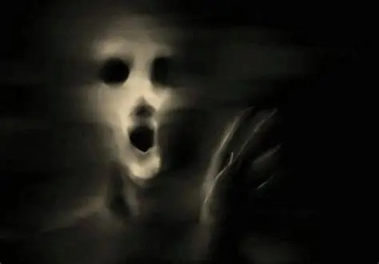

HISTORIAS DE FANTASMAS
Explora relatos reales y ficticios acerca de fantasmas enviados por nuestros lectores...

La Mujer que Caminaba al Revés
Una figura comenzó a aparecer en el pasillo cada madrugada, siempre de la forma más antinatural posible. Y cada noche se acerca un poco más.
[Leer Más]
El Grito que No Abría la Boca
Un hermano fallecido comenzó a manifestarse en la casa… pero no de la manera que su familia esperaba.
[Leer Más] 
Donde Sea que Mires, Yo También
Una presencia empezó a aparecer siempre fuera del campo de visión… hasta que un día decidió mostrarse de frente.
[Leer Más]